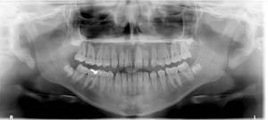

Procedure:
When the patient has been properly positioned, the resulting panoramic image should display:
- A gentle smile line with separation of the maxillary and mandibular teeth by the bite block.
- The tongue should be in contact with the hard and soft palates with no intervening air space.
- The hard palate is usually located superior to the floor of maxillary sinus, and should be located above the apices of the posterior teeth.
- The condyles should be of equal size and on the same horizontal plane.
- The ramus should be the same width bilaterally.
- The hyoid bone should appear as a double image equal in size bilaterally.
- It should be noted that when the patient’s lips are open, the air space between the upper and lower lips, may obscure the crowns of the anterior teeth.

|